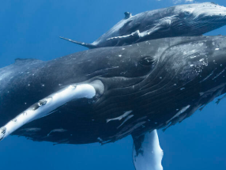
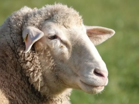
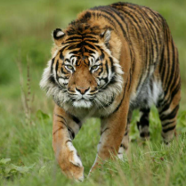
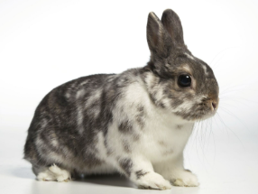
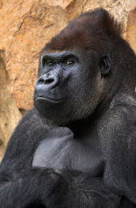

| ANIMALES | DESCRIPCION | IMAGEN |
|---|---|---|
ballena |
Las ballenas son los mamíferos marinos más grandes del planeta, pertenecientes al orden de los cetáceos, caracterizados por respirar aire, ser de sangre caliente y alimentar a sus crías con leche materna. Viven en todos los océanos, migran para reproducirse y algunas especies, como la ballena azul, pueden superar los 30 metros de longitud y pesar 200 toneladas. |
 |
borrego |
Un borrego es un mamífero rumiante doméstico (ovino) de la especie Ovis aries, generalmente de uno a dos años de edad, caracterizado por su cuerpo cubierto de lana y utilizado por su carne, leche y piel. En México, es el término común para los corderos jóvenes, aunque abarca también etapas adultas, siendo una importante fuente de producción ganadera |
 |
tigre |
Los tigres son los más emblemáticos de los grandes felinos. Su hermoso pelaje negro y anaranjado, además de sus largos bigotes blancos, son fuente de admiración e inspiración para muchos. Pero a pesar de ser tan venerados, también son vulnerables a la extinción. |
 |
conejo |
El conejo (Oryctolagus cuniculus) es un mamífero lagomorfo de pequeño tamaño, caracterizado por sus largas orejas, patas traseras fuertes para saltar y una cola corta. Son herbívoros, sociales, viven en madrigueras y se reproducen rápidamente. Son criados por su carne y pelo, y actúan como especie clave en ecosistemas mediterráneos |
 |
gorila |
Los gorilas son los primates más grandes y fuertes del mundo, simios herbívoros que habitan en los bosques tropicales de África central y occidental. Son parientes muy cercanos al ser humano, compartiendo aproximadamente el 98.3% de su ADN. Se caracterizan por vivir en grupos familiares liderados por un "lomo plateado" dominante. |
 |